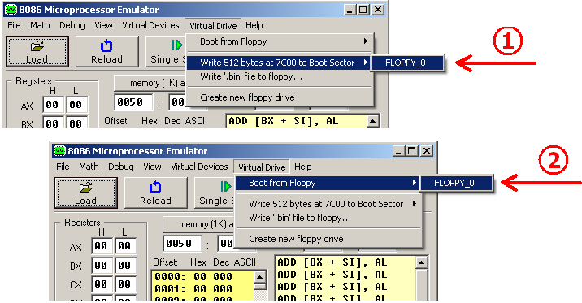
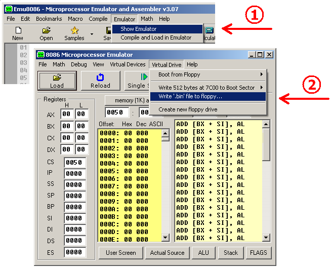
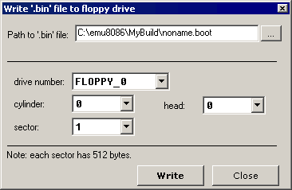
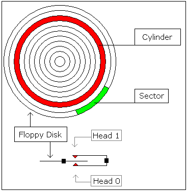

; directive to create BOOT file:
#make_boot#
; Boot record is loaded at 0000:7C00,
; so inform compiler to make required
; corrections:
ORG 7C00h
PUSH CS ; make sure DS=CS
POP DS
; load message address into SI register:
LEA SI, msg
; teletype function id:
MOV AH, 0Eh
print: MOV AL, [SI]
CMP AL, 0
JZ done
INT 10h ; print using teletype.
INC SI
JMP print
; wait for 'any key':
done: MOV AH, 0
INT 16h
; store magic value at 0040h:0072h:
; 0000h - cold boot.
; 1234h - warm boot.
MOV AX, 0040h
MOV DS, AX
MOV w.[0072h], 0000h ; cold boot.
JMP 0FFFFh:0000h ; reboot!
new_line EQU 13, 10
msg DB 'Hello This is My First Boot Program!'
DB new_line, 'Press any key to reboot', 0
|



Boot Sector Location:Cylinder: 0 |

Idealized floppy drive and diskette structure:
For a 1440 kb diskette: